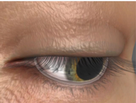

Five connected strands across human perception, behaviour modelling, and socially intelligent systems.

Gaze and multimodal human perception
This strand develops robust ways to observe people across time, viewpoints, and sensing conditions. It spans three-dimensional gaze estimation from facial appearance and geometry, temporal modelling of eye movements, gaze prediction and eye segmentation in virtual reality, and multimodal body segmentation using colour, depth, and thermal imagery.
Human behaviour depends on who is involved, what they are doing, and the situation around them. UDIVA provides synchronized audiovisual, physiological, and contextual data from unscripted dyadic interaction. Work around the dataset studies personality, social behaviour, and forecasting, while UDIVA-HHOI extends this direction to recognition, anticipation, and causal event grounding of human-human-object interactions.
This work examines what multimodal behaviour can reveal about emotion and individual differences. It includes emotion expression recognition in older adults interacting with a virtual coach, perceived emotion in young children, and apparent and self-reported personality.
This strand models the many plausible ways human behaviour can unfold. BeLFusion predicts diverse future behaviours from observed motion. in2IN and DualMDM generate coordinated interactions, while REACT studies the generation of multiple appropriate facial responses. FlowMDM, MixerMDM, and Rolling Prediction Models address long-form composition, controllable motion, and real-time recovery from sparse signals.
This strand brings perception and behavioural modelling into systems that interact with people. SERMAS developed a modular architecture and toolkit for socially acceptable extended reality agents, combining user awareness, intention and emotion inference, dialogue, gesture, and body language. Related work studies gaze and emotion during interaction with virtual agents.